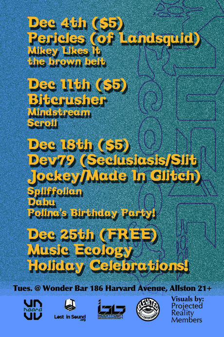

Viewing events for the location Wonder Bar
Holiday Party with Music Ecology Family
Dec. 25, 2012, 10 p.m. - Dec. 26, 2012, 2 a.m. at Wonder Bar

Ok kids, here is the deal. On December 25th - Christmas Day (yes, we are not afraid to use the word Christmas in a sentence) we will gather at Wonder Bar like we usually do. We'll start the evening right ...
Dev79 (Seclusiasis, Slit Jockey Records, Made In Glitch) returns to Wonder Bar
Dec. 18, 2012, 10 p.m. - Dec. 19, 2012, 2 a.m. at Wonder Bar

We are stoked to announce the return of Dev79 to Music Ecology. He will be accompanied by local heroes: DJ Spliffolian as well as an extremely rare public appearance by Dabu. This will also be a chance to wish "Happy ...
Bitcrusher with Mindstream and Scroll
Dec. 11, 2012, 10 p.m. - Dec. 12, 2012, 2 a.m. at Wonder Bar
Bitcrusher
"president of cold fusion production .inc
2000-2006 nick has been a big influence to the edm events and
productions in maimi,philly,nyc,boston,, burlington and
internationally since 1998..currently representing:
LTD and
TRUE production
A veteran heavy hitting ...
Pericles (of Landsquid), the brown belt & Mikey Likes It
Dec. 4, 2012, 10 p.m. - Dec. 5, 2012, 2 a.m. at Wonder Bar
Pericles (of Landsquid)
Since beginning this
project in 2007, PERICLES has shared all original live sets of
future music all over the east coast and south east with a who's who
of 21st century electronica including Shpongle, Ott, The ...
2370 + ghostmuse @Music Ecology in Wonder Bar
Nov. 27, 2012, 10 p.m. - Nov. 28, 2012, 2 a.m. at Wonder Bar

2370 systematically dismantles, reassembles, and mangles music of other places. The results of this sonic destruction are dubbed out groove improvisations featuring Mike Piehl on drums, Ian Kennedy on laptop and guitar, with Ed Guild (of Psylab) applying a lethal ...
Archive
2014
2013
- December (1)
- November (4)
- October (2)
- September (5)
- August (2)
- July (4)
- June (4)
- May (3)
- April (5)
- March (5)
- February (6)
- January (4)
2012
- December (6)
- November (6)
- October (6)
- September (4)
- August (5)
- July (6)
- June (5)
- May (6)
- April (5)
- March (5)
- February (5)
- January (6)
2011
- December (5)
- November (5)
- October (4)
- September (5)
- August (3)
- July (2)
- June (4)
- May (5)
- April (4)
- March (6)
- February (5)
- January (4)
2010
- December (5)
- November (5)
- October (5)
- September (4)
- August (2)
- July (4)
- June (6)
- May (5)
- April (4)
- March (5)
- February (5)
- January (1)
Locations
- Brighton Music Hall (1)
- Good Life (1)
- Machine Nightclub (13)
- Middle East Corner (1)
- Middle East Upstairs (4)
- Phoenix Landing (1)
- Royale Boston (2)
- South Shore Music Hall (1)
- T.T. the Bear's Place (1)
- The Sinclair (1)
- The Stone Church (1)
- Wonder Bar (190)
- Wonder Bar - DOWNSTAIRS (2)
Connect